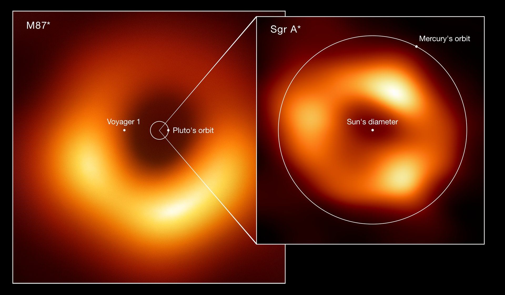
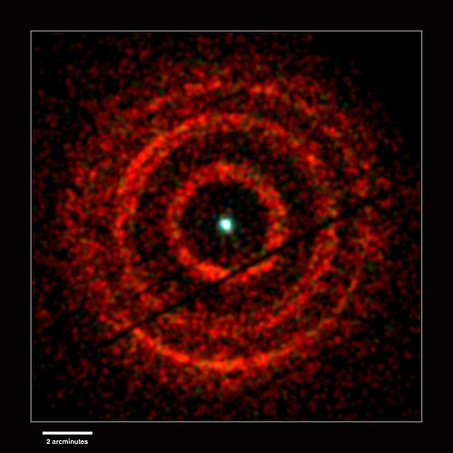

History of Black Holes
Sagittarius A*
- Location: Center of the Milky Way Galaxy (~26,000 light-years away)
- Type: Supermassive black hole (~4 million solar masses)
- Importance: First direct evidence came in 2002 from stars orbiting it; confirmed in 2022 with the first image by the Event Horizon Telescope (EHT).

Sagittarius A*
Credit: Event Horizon Telescope in 2017, released in 2022
Cygnus X-1
- Location: Constellation Cygnus (~6,000 light-years away)
- Type: Stellar-mass black hole (~21 solar masses)
- Importance: First strong black hole candidate, discovered in 1964 via X-rays.

Chandra X-ray Observatory image of Cygnus X-1
Credit: NASA/CXC/SAO
M87*
- Location: Center of galaxy Messier 87 (~53 million light-years away)
- Type: Supermassive black hole (~6.5 billion solar masses)
- Importance: The first black hole ever imaged (2019, EHT project).

Size comparison between Sagittarius A* and M87*.
Credit: Event Horizon Telescope in 2017, released in 2022
V404 Cygni
- Location: Constellation Cygnus (~7,800 light-years away)
- Type: Stellar-mass black hole (~9 solar masses)
- Importance: Known for dramatic outbursts and bright X-ray flares in 2015.

X-ray light echoes from the 2015 nova eruption
Credit: Andrew Beardmore (Univ. of Leicester) and NASA/Swift
LMC_X-1
- Location: Large Magellanic Cloud (~160,000 light-years away)
- Type: Stellar-mass black hole (~10 solar masses)
- Importance: Among the most studied extragalactic black holes; part of a binary system.

Hubble image of LMC X-1 (right side: star in the red circle) and NGC 2079
(nebula on the left)
TON 618
- Location: Distant quasar (~10.4 billion light-years away)
- Type: Ultramassive black hole (~66 billion solar masses)
- Importance: One of the largest black holes ever discovered.

The quasar appears as the bright, bluish-white dot at the center.
Credit: Sloan Digital Sky Survey Data Release 9 (DR9)